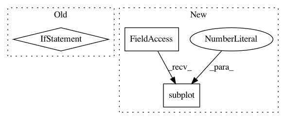

ef234844e1604d5496607fcf48886d9e556c0685,engine/training.py,,run,#Any#Any#Any#Any#,20
Before Change
print("iter {:d}, loss={:.8f},"
"error_rate={:.8f} ({:.3f}s)".format(
current_iter, loss_value, miss_value, iter_time))
if (current_iter % 20) == 0:
writer.add_summary(sess.run(write_summary_op), current_iter)
if (current_iter % param.save_every_n) == 0 and i > 0:
saver.save(sess, ckpt_name, global_step=current_iter)
print("Iter {} model saved at {}".format(
current_iter, ckpt_name))
After Change
writer.add_summary(sess.run(write_summary_op), current_iter)
// Plot reconstructions for the basic autoencoder
for p in range(0,4):
plt.subplot(4, 2, 2*p+1)
temp1 = sess.run(predictions[0])
temp1 = temp1[p,:,12,:,0]
temp1.reshape(24, 24)
plt.imshow(temp1, cmap="gray")
In pattern: SUPERPATTERN
Frequency: 3
Non-data size: 3
Instances
Project Name: NifTK/NiftyNet
Commit Name: ef234844e1604d5496607fcf48886d9e556c0685
Time: 2017-06-21
Author: r.gray@ucl.ac.uk
File Name: engine/training.py
Class Name:
Method Name: run
Project Name: pytorch/tutorials
Commit Name: 238dcd48412361f669bc41ee48995266ac168ee8
Time: 2017-04-11
Author: sasankchilamkurthy@gmail.com
File Name: beginner_source/transfer_learning_tutorial.py
Class Name:
Method Name: visualize_model
Project Name: geomstats/geomstats
Commit Name: f5813466fb9d202def50f783c0fdeeb164da50d6
Time: 2018-02-21
Author: ninamio78@gmail.com
File Name: geomstats/visualization.py
Class Name:
Method Name: plot